Runes reforged |
|---|
With the new Season now live in League of Legends, Runes and Masteries were combined into a single system, which can be re-arranged in the collection tab. It can also be changed in Champion Select, as opposed to the old Rune system.
There are 60 Runes, which are all free now, providing a more interesting gameplay to newer players.
Choose one tree to pursue
PrecisionBecome a LegendThis path gives improved attacks and sustained damage. It is mostly an ADC path due to the possibility of having improved Damage, Sustain and some Mobility. |
|---|
DominationHunt and Eliminate PrayThis path emphasizes Burst damage and target access. It is mostly an Assassin path due to the greatily improved damage to Assassin-like kits, combined with great Base Damages. |
|---|
SorceryUnleash DestructionThis path focuses on empowering abilities and the manipulation of resources. It is mostly a Mage path due to favoring long-ranged, Mana spending Spells. |
|---|
ResolveLive ForeverThis path revolves around durability and crowd control. It is mostly a Tank path due to offering Defensive stats, and strengthening Crowd Control effects, which are common on tankier Champions. |
|---|
InspirationOutwit Mere MortalsThis path targets Creative thinking and rule bending. This path is a bit of an oddball, it does not favor much any role, and it is more of a niche pick. It mainly revolves around gold, Consumables and Summoner Spells. |
|---|
  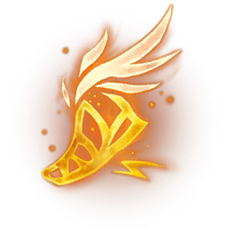 |
 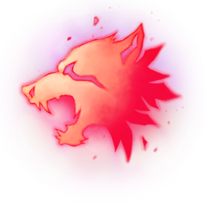 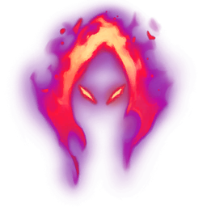 |
 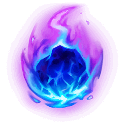 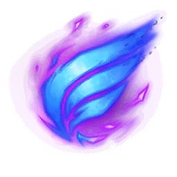 |
  |
  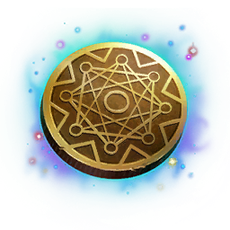 |

|
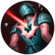 | 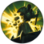 | ||
| 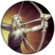 |

|
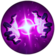 |

|
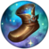

|

|
Hover one of the runes to find out its name and passives/stats!
Basic attacks against enemy champions apply stacks for 4 seconds. Attacking a new target removes all stacks from the previous target. Applying 3 stacks to a target deals 30 - 120 (based on level) bonus Adaptive damage and makes them Vulnerable, causing them to take 12% increased damage from all sources (except from true damage) for the next 6 seconds.
Damaging an enemy champion begins a 1.5 second timer. Upon completion, you gain 30% - 80% (based on level) Attack Speed as well as removing the Attack Speed cap for 3 seconds. Attacking a champion while the effect is active will extend the duration to 6 seconds.
Attacking and moving builds Energy stacks. A 100 stacks, your next attack is Energized. Enenrgized attacks heal you for 5 - 50 (+0.1 Bonus AD, +0.2 AP) and grant +30% Movement speed for 1s. Healing is 60% as effective when used on a minion.
Healing in excess of your maximum Health is converted into a shield, up to 10 (+ 10% of maximum Health). The shield will decay if you have not received healing, dealt damage or taken damage in the last 6 seconds.
Champion takedowns, after a 0.5 second delay, restore 15% of your missing Health and grant an additional 25 Gold.
You restore mana equal to 100% of mana expended for 5 seconds whenever you score a champion takedown or level up.
Gain 3% (+1.5% per Legend stack) bonus Attack Speed, up to 18% with 10 stacks.
Earn progress toward Legend stacks for every champion takedown, epic monster takedown, large monster kill, and minion kill.
Gain 5% (+ 1.5% per Legend stack) tenacity, up to 20% with 10 stacks.
Earn progress toward Legend stacks for every champion takedown, epic monster takedown, large monster kill, and minion kill.
Gain (0.8% per Legend stack) life steal, up to 8% at 10 stacks.
Earn progress toward Legend stacks for every champion takedown, epic monster takedown, large monster kill, and minion kill.
Deal 10% increased damage to champions below 40% Health. Additionally, you gain 9 bonus Attack Damage or 15 Ability Power (Adaptive) for 10 seconds whenever you score a champion takedown. This bonus does not stack.
Deal 4% bonus damage to champions with at least 150 more maximum Health than you. This increases up to 10% bonus damage versus targets with 2000 more maximum Health than you.
Deal 5% bonus damage while below 60% of your maximum Health. This increases based on your missing Health, up to 12% bonus damage while below 30% of your maximum Health.
Basic attacks and abilities generate stacks on enemy champions hit, up to one per attack or cast. Applying 3 stacks to a target within a 3 second period causes them to be struck by lightning, dealing them 50 - 220 (based on level) (+ 50% bonus AD) (+ 30% AP) Adaptive damage.
Your boots gain the active effect, PREDATOR. The active is disabled for the first 150 seconds of the game.
PREDATOR: You begin a 3 second channel. You can move while channeling and will be interrupted if you receive damage (except minions), putting the item on full cooldown. Upon completion, you gain 45% bonus Movement speed icon Movement speed for the next 15 seconds or until your next attack or damaging ability, which deals 60 - 180 (based on level) (+ 40% bonus AD) (+ 25% AP) bonus Adaptive damage.
Large minions, large monsters and champions drop Soul Essence on death, which you can collect for the next 10 seconds by moving nearby. If you kill the target yourself, the Soul Essence will be automatically picked up. Champions grant 6 Soul Essence; large minions grant 4 Soul Essence; and large monsters grant 2 Soul Essence. Collecting Soul Essence empowers your next attack versus an enemy champion or structure within the next 20 seconds to deal 40 - 80 (based on level) (+ Total Soul Essence) (+ 25% bonus AD) (+ 20% AP) bonus Adaptive damage. After collecting 150 Soul Essence you become Soul Charged, increasing the time to trigger the empowered attack to 300 seconds.
Your attacks and damaging abilities deal 12 - 30 (based on level) bonus true damage to impaired enemy champions.
You heal for 18 - 35 (based on level) (+ 20% bonus AD) or (+ 10% AP) (Adaptive) the next time you damage an enemy champion.
Damaging an enemy champion within 3 seconds of using a dash, blink or Teleport, or exiting from invisibility or camouflage, grants 10 Lethality and 8 Magic Penetration for the next 5 seconds.
Scoring a takedown on an enemy ward summons a friendly Zombie Ward in its place (10 second assist timer). If the brush where you killed the enemy ward already contains an allied ward, you instead gain a Zombie Ward in your Trinket Slot that can be placed at any location within the next 30 seconds. Zombie Wards grant sight over 1100 units, are visible to the enemy team, have 1 Health, last for 180 seconds and don't count towards your ward limit. Additionally, your own wards will summon a Zombie Ward when they time-out. This does not occur if they are replaced due to the ward limit. Killing a Zombie Ward will grant 1 Gold.
Entering a brush instigates a channel that, upon completion, summons a Ghost Poro. You may move while channeling but must remain within the brush for the duration and you will be interrupted by damage. The Poro grants sight over the surrounding area until a new one is summoned or until an enemy champion enters the brush. If an enemy champion scares away the Poro, he will ping his team and then go on cooldown for a short while.
Collect 2 Eyeballs from champion takedowns and 1 Eyeball from ward takedowns, up to 20. Gain 1 Ability Power or 0.6 Attack Damage (Adaptive) per Eyeball, up to 20 Ability Power and 12 Attack Damage. Eyeball Collection has a 10 second assist timer. Completing your collection awards an additional 10 Ability Power or 6 Attack Damage (Adaptive).
Heal for 2.5% (+ 2.5% per Bounty Hunter stack) of the damage dealt by your abilities. Benefits from Heal Power. Earn a Bounty Hunter stack for takedowns, up to one per unique enemy champion. Healing reduced to one third on area of effect abilities.
Reduces the cooldown of item actives by 10% (+ 6% per Bounty Hunter stack). This effect also applies to trinkets. Earn a Bounty Hunter stack for takedowns, up to one per unique enemy champion.
Gain 8 (+ 8 per Bounty Hunter stack) out-of-combat Movement speed. Earn a Bounty Hunter stack for takedowns, up to one per unique enemy champion.
Damaging an enemy champion signals Aery to dash to them, dealing 15 - 40 (based on level) (+ 10% AP) or (+ 15% bonus AD) Adaptive damage. Abilities targeted at allied champions signal Aery to dash to them, shielding them for 30 - 80 (based on level) (+ 25% AP) or (+ 40% bonus AD) (Adaptive).Aery lingers on the target for 2 second before flying back to you, and cannot be sent out again until she returns to you.
Damaging an enemy champion with an ability hurls an Arcane Comet at their current location, dealing 30 - 100 (based on level) (+ 20% AP) or (+ 40% bonus AD) Adaptive damage after a brief delay.
Basic attacks and abilities generate stacks on enemy champions hit, up to one per attack or cast. Applying 3 stacks to a target within a 3 second period grants you 15% - 40% (based on level) Movement speed for 3 seconds. Melee champions also gain 75% slow resist for the duration.
If you would take magic damage that would reduce you below 30% of your maximum Health, you gain a shield that absorbs 40 - 120 (based on level) (+ 10% AP) or (+ 15% bonus AD) (Adaptive) magic damage for 4 seconds.
Your next ability used has its mana or energy cost refunded, and restores 8% of your missing mana or 8% of your missing energy.
Reduces the cooldown of your ultimate ability by 5%, increased by 2% each time you cast your ultimate, up to 15% after 5 casts.
Gain 10% Cooldown reduction icon cooldown reduction at level 10. Additionally, you gain either 2 Ability Power or 1.2 bonus Attack Damage (Adaptive) for every 1% cooldown reduction in excess of the cap.
Gain 4% bonus Movement speed. Additionally, you gain bonus Ability Power or Attack Damage (Adaptive) equal to your bonus Movement speed (8% in Ability Power or 4.8% in Attack Damage).
Gain 3 - 24 (based on level) bonus Attack Damage or 5 - 40 (based on level) Ability Power (Adaptive) while above 70% of your maximum Health.
Your next ability hit sets champions on fire dealing 30 - 60 (based on level) bonus magic damage after 1 second.
While in the river, you gain 25 bonus Movement speed and 5 - 30 (based on level) Ability Power or 3 - 18 (based on level) bonus Attack Damage (Adaptive).
Every 10 minutes, gain (1 per 10 Minutes) stacks of Gathering Storm. Each stack grants 8 Ability Power or 4.8 Attack Damage (Adaptive). This stacks with no upper limit, for a total of 8 / 24 / 48 / 80 / 120 / ... AP or 5 / 14 / 29 / 48 / 72 / ... AD at 10 / 20 / 30 / 40 / 50 / ... minutes.
If you have dealt or received damage in the last 2 seconds, you will generate stacks of Grasp of the Undying every second. At 4 stacks, your next attack against an enemy champion will deal 4% of your maximum Health bonus magic damage, restore 2% of your maximum Health, and permanently grants 5 bonus Health. The empowered attack is primed for 6 seconds, refreshing whenever you deal or receive damage.
Immobilizing an enemy champion grants 20 (+ 30% armor) bonus armor and 20 (+ 30% magic resistance) bonus magic resistance for 2.5 seconds. After the duration, you release a shockwave that deals 40 - 140 (based on level) (+ 3.5% of your maximum Health) magic damage to nearby enemies.
While within 175 units of an allied champion, you raise your Guard. Allied champions you affect with unit-targeted abilities are also Guarded for 2.5 seconds, irrelevant of distance. If you or a Guarded ally would take damage from an enemy champion or monster, you all first gain a shield for 60 - 150 (based on level) (+ 20% Guardian's AP) (+ 10% Guardian's bonus Health) as well as 20% bonus Movement speed for 1.5 seconds.
You gain 15% slow resist and tenacity for 10 seconds whenever you cast a Summoner Spell. Additionally, you gain 10% slow resist and tenacity for each of your Summoner Spells on cooldown. These stack additively and multiplicatively respectively.
You generate stacks on enemy structures within 600 units, up to 6 after 4 seconds. Your next attack versus a structure with 6 stacks deals 125 (+ 30% of your maximum Health) bonus physical damage. Demolish will only go on cooldown upon triggering the damage. Stacks fall off slowly if you move out of range.
Impairing the movement of an enemy champion marks them for 4 seconds. Allied champions who attack marked enemies heal for 5 (+ 1% of your maximum Health).
Gain 5 bonus armor. Additionally, you gain 5% armor for 3 seconds whenever you restore at least 20 Health, restore Health from a Consumable or are shielded.
Gain 5 bonus magic resistance. Additionally, you gain 5% magic resistance for 3 seconds whenever you restore at least 20 Health, restore Health from a Consumable or are shielded.
After 10 minutes gain 8 bonus armor and 8 bonus magic resistance and increases your total armor and magic resistance by 5%.
Every 8 monsters or enemy minions that die near you permanently increase your maximum Health by 0.2%.
Grants 5% Heal and Shield Power. Outgoing healing and shielding is increased by 10% versus targets below 40% Health. Self-healing and self-shielding is increased by 10% while you are below 40% Health.
After taking damage from an enemy champion, you heal for 6 (+ 4% of your missing Health) over 10 seconds.
Reduces the cooldown of Summoner Spells by 25%. Additionally, you may swap your Summoner Spells while at the shop by exchanging Summoner Shards. You gain your first Summoner Shard at 2:00, and gain another every 6 minutes thereafter, up to a maximum of 2 at a time. Newly acquired spells are acquired on their own cooldown. You may not have two instances of the same Summoner Spell. Swapping to Smite during a game will not grant access to jungler items.
Basic attacks slow enemy champions for 1.5 seconds, which increases over the duration. This effect cannot occur on the same target more than once every few seconds. Slowing an enemy champion with an item active triggers your Freeze Ray to fire a laser that cuts an X-unit line through the ground in their direction, creating a Slowing field for 5 seconds that slows units inside by 50%.
After using an ability, your next basic attack within 10 seconds has 25 bonus range. If the attack is against a champion, you gain 5 Gold. Occasionally, you will gain a Consumable item instead. If you gain a Consumable item while your inventory is full, the Consumable will instead be consumed.
While Flash is on cooldown, it is replaced by Hexflash.
FIRST CAST: You begin channeling, increasing Hexflash's range over the next 2.5 seconds. After at least 1 second, you can reactive the ability. Releasing the button earlier than 1 second or entering combat with a champion will put Hexflash on cooldown for 10 seconds.
SECOND CAST: You blink to the target location within range.
Receive a Total Biscuit of Everlasting Will item Total Biscuit of Everlasting Will at 3:00, 6:00, 9:00 and 12:00. If the inventory is full while receiving a biscuit, the biscuit(s) will appear as soon as a place in the inventory is freed. Consume a Biscuit to restore 15% of your missing Health and 15% of your missing mana over 15 seconds, as well as permanently increasing your maximum mana by 40. You will also gain the increased mana if you sell the biscuit for 30 Gold.
Receive a Stopwatch item Replica Stopwatch at 6 minutes. The Replica Stopwatch is identical to the Stopwatch item Stopwatch, except it has only half the value and so costs 300 Gold more to upgrade.
At 10 minutes (-30 seconds per Takedown), you gain Slightly Magical Boots for free. Slightly Magical Boots are identical and can be upgraded as if Boots of Speed, except that its upgrades cost 50 Gold less. Additionally, your boots gain 10 bonus Movement speed icon Movement speed.
You can enter debt to buy items, up to 150 Gold (+ 5 Gold per Minute), which is displayed as negative Gold in your treasury. A 50 Gold lending fee is added on to the amount of money you owe after leaving the store. You cannot borrow money before 2:00.
Start the game with 6 × Minion Dematerializers, which can be activated to execute the target Melee minion, Caster minion or Siege minion. Dematerializers begin the game on a 155 second cooldown. In addition to the kill Gold and experience for the kill, you also gain 4% increased damage to that type of minion for the remainder of the game. Dematerializers beyond the first used on the same type of minion increases this bonus by 1%.
Gain 5% cooldown reduction and increases the cooldown reduction cap to 45%. Additionally, reduces the cooldown of Summoner Spells and item actives by 5%.
Gain 10% bonus Movement speed when moving toward an movement impaired allied champion, or toward an enemy champion whose movement you have impaired.
Permanently gain 100 bonus Health, but deal 10% less damage to enemy champions and monsters for the first 10 minutes.
+18% Attack Speed
| The Merciless Elite | The Brazen Perfect | The Eternal Champion | The Savant |
+18 AP or 10.8 bonus AD (Adaptive)
| The Glorious Executioner | The Aether Blade | The Immortal Butcher | The Ingenious Hunter |
+25 AP or 15 bonus AD (Adaptive)
| The Incontestable Spellsliger | The Calamity | The Ancient One | The Cryptic |
+130 bonus Health
| The Imperious Behemoth | The Leviathan | The Arcane Colossus | The Enlightened Titan |
Consumables last 20% longer, *(+bonus stats based on the secondary path)
| The Virtuoso | The Ruthless Visionary | The Stargazer | The Timeless |
(*)
Adaptive damage is a new mechanic introduced in League. It means that you receive either the bonus AP or the bonus AD, depending the value of AP and AD you have gained through items.